1. Pendahuluan
Reverse Engineering pada aplikasi Android merupakan proses membongkar file APK untuk memahami struktur internal, logika program, serta konfigurasi keamanan. Teknik ini umum digunakan dalam analisis keamanan, audit aplikasi, dan pembelajaran mekanisme kerja aplikasi Android.
Pada artikel ini dilakukan proses decompile – analisis – modifikasi – rebuild – signing APK menggunakan APKTool dan JADX di lingkungan Windows 11 tanpa WSL maupun virtual machine.
2. Praktik 1 - Decompile APK dengan APKTool
2.1 Install APKTool
2.2 Decompile APK
Langkah kedua adalah melakukan decompile APK untuk mendapatkan struktur file dan source code dalam bentuk smali.
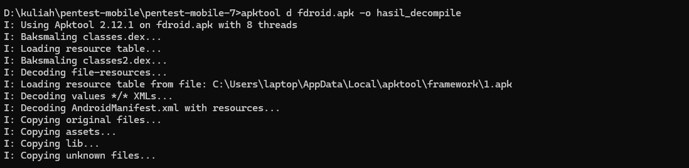
Hasil decompile menghasilkan beberapa folder utama:
- smali/ – kode bytecode Android
- res/ – resource aplikasi
- AndroidManifest.xml – konfigurasi aplikasi

3. Praktik 2 - Analisis Source Code Menggunakan JADX
3.1 Install JADX GUI
3.2 Buka aplikasi
Untuk mempermudah analisis logika aplikasi, digunakan jadx-gui yang menampilkan hasil decompile dalam bentuk Java-like code.
3.3 Load file fdroid.apk
Langkah analisis:
- Membuka file APK menggunakan jadx-gui
- Menelusuri package utama aplikasi
- Mencari string sensitif seperti
login, token, atau api
Key
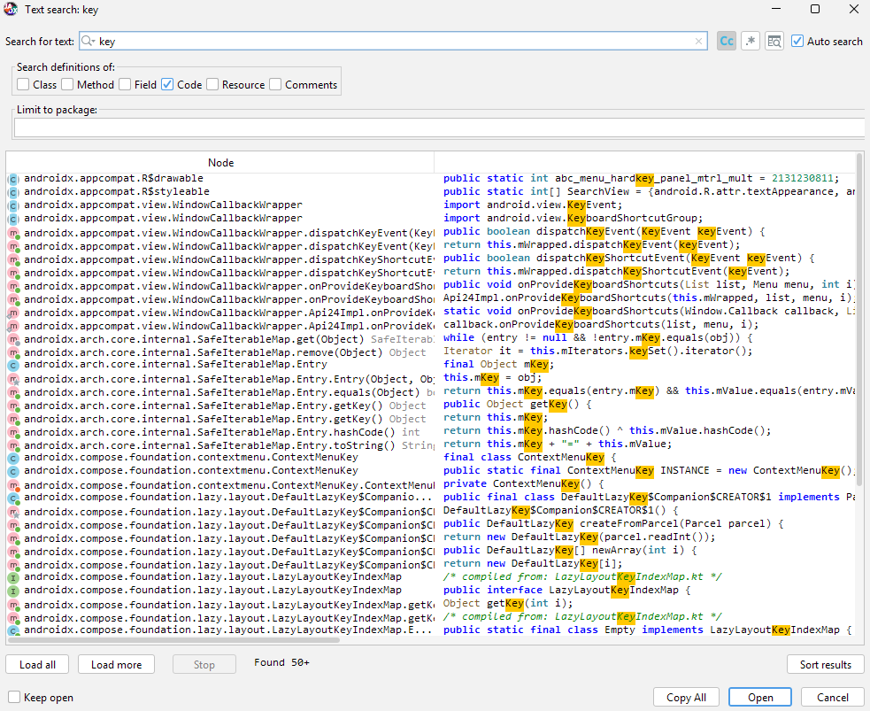
Token
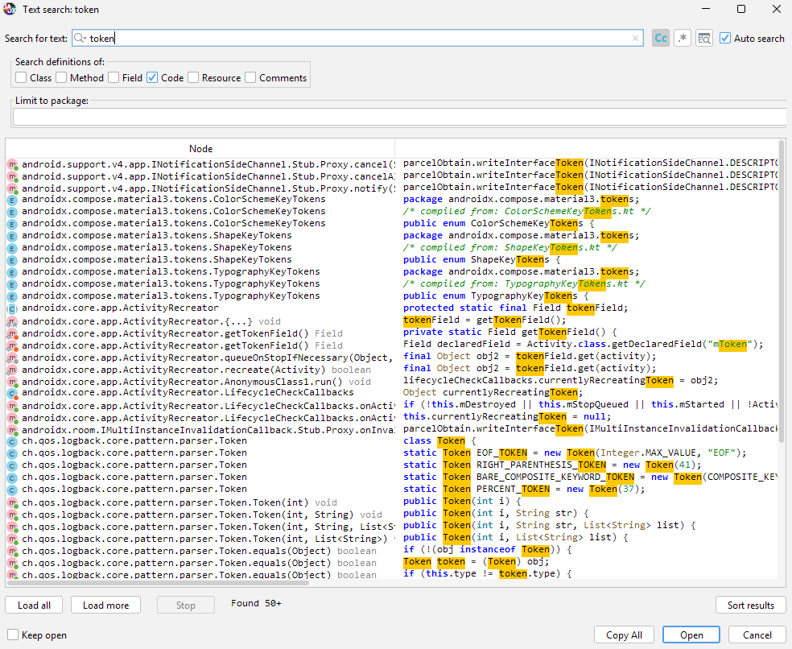
Api
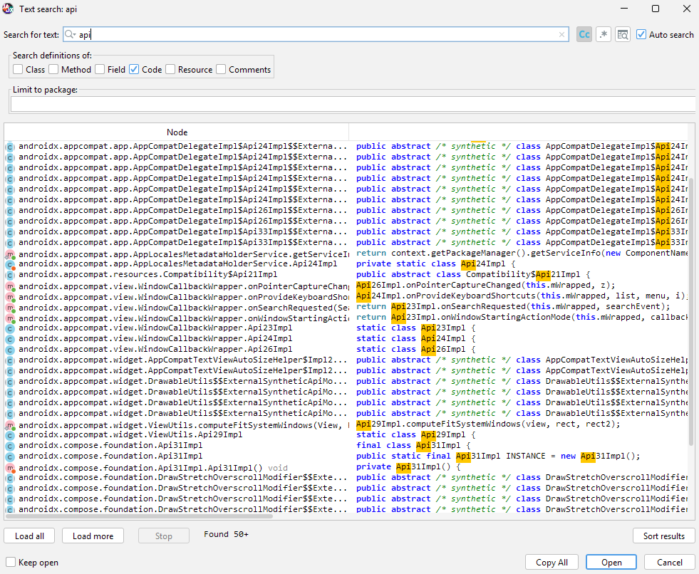
Login
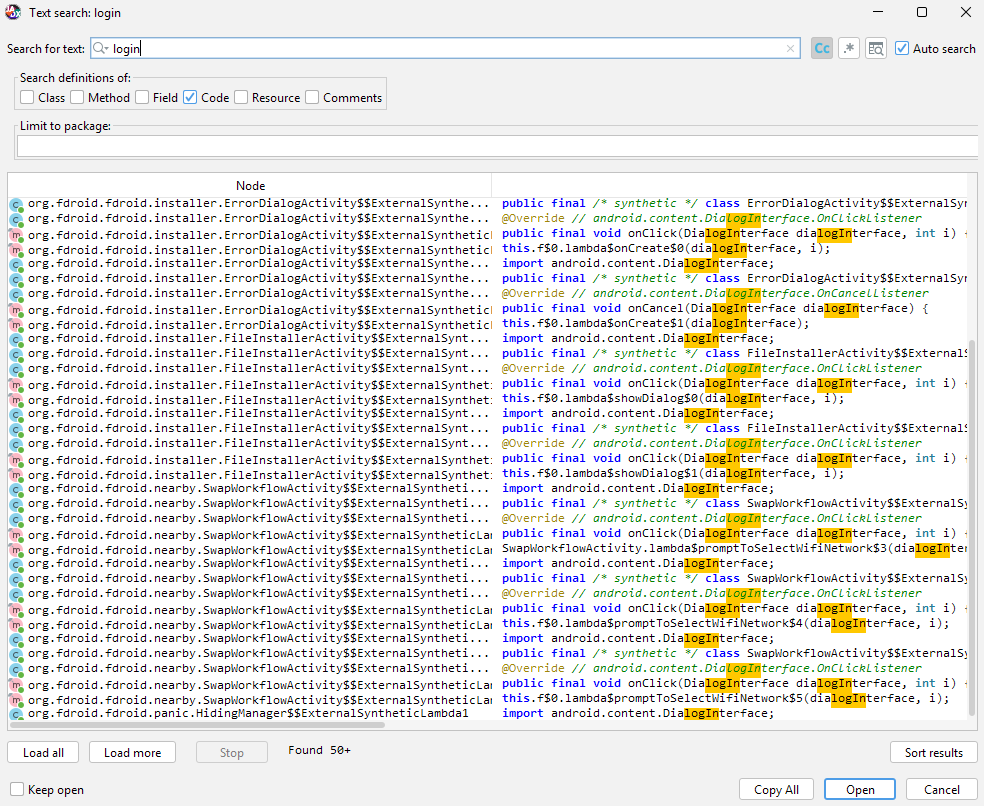
Dari hasil analisis, ditemukan method autentikasi yang menentukan status login pengguna.
4. Praktik 3 - Modifikasi Smali (Patch Sederhana)
Aplikasi tidak memiliki mekanisme login, sehingga patch tidak dilakukan pada autentikasi. Modifikasi difokuskan pada fitur Panic dengan mem‐patch method isTriggerIntent() pada kelas info.guardianproject.panic.Panic. Method ini berfungsi untuk mendeteksi intent panic. Dengan memaksa nilai return menjadi false, mekanisme panic dapat dinonaktifkan.
4.1 Temukan File Smali dari hasil decompile
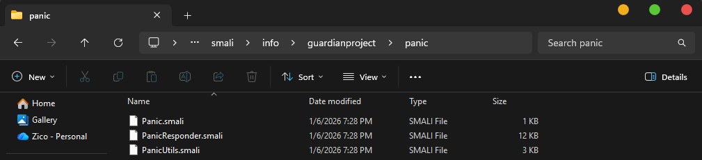
4.2 Patch Smali
Sebelum patch:
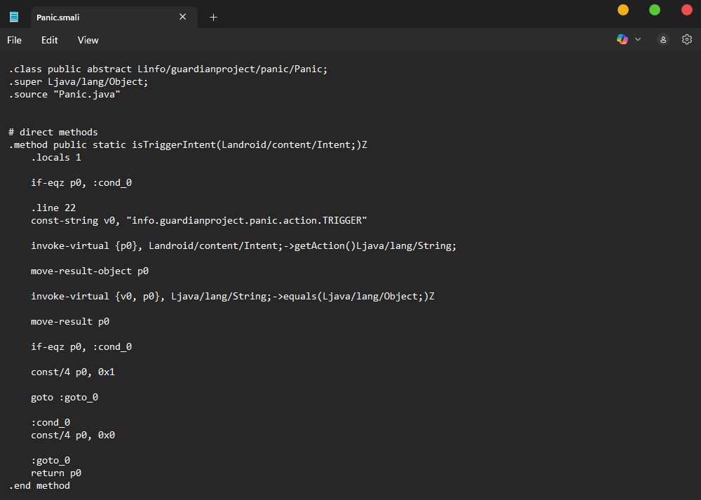
Sesudah patch (dipaksa selalu false):
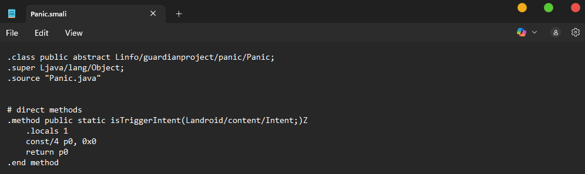
4. Praktik 4 - Proses Rebuild APK
Setelah modifikasi selesai, APK dibangun ulang menggunakan APKTool:
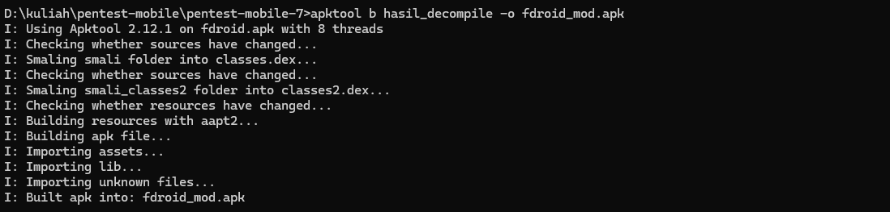
File APK hasil modifikasi berhasil dibuat dengan nama fdroid_mod.apk.
6. Proses Signing APK
APK hasil rebuild belum dapat diinstal karena belum memiliki signature digital. Oleh karena itu dilakukan proses signing.
6.1 Membuat Keystore
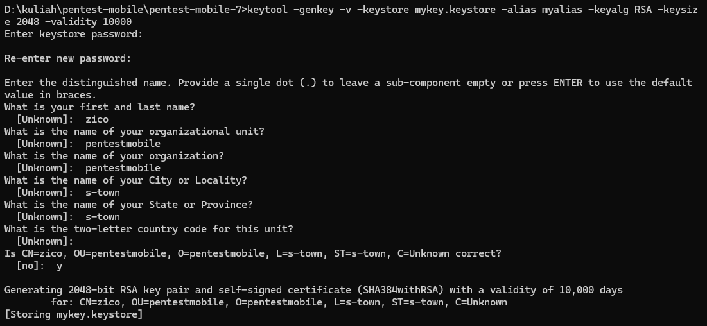
6.2 Signing APK
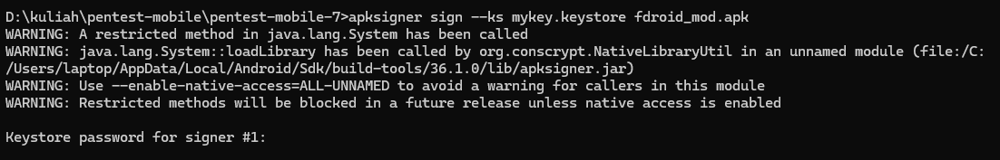
7. Instalasi APK ke Emulator
Setelah proses signing selesai, APK diinstal ke emulator Android menggunakan ADB:
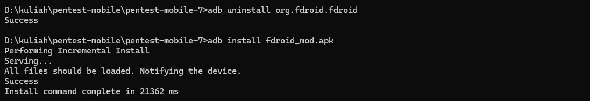
Instalasi berhasil dan aplikasi dapat dijalankan tanpa error.
8. Perubahan Aplikasi Setelah Dimodifikasi
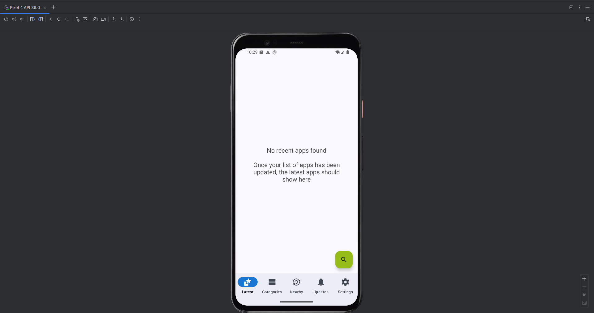
Setelah modifikasi dilakukan, aplikasi menunjukkan perubahan perilaku sebagai berikut:
- Intent dengan action info.guardianproject.panic.action.TRIGGER tidak lagi dikenali sebagai pemicu panic oleh aplikasi.
- Mekanisme panic / emergency trigger tidak dijalankan karena logika internal aplikasi telah dimodifikasi pada level smali.
- Aplikasi tetap berjalan normal tanpa mengeksekusi logika panic.
Fitur panic pada aplikasi tidak disediakan dalam bentuk menu atau antarmuka pengguna, melainkan bekerja melalui intent internal. Oleh karena itu, tidak terdapat tampilan menu panic pada screenshot emulator, dan perubahan perilaku aplikasi hanya dapat dijelaskan melalui analisis logika internal aplikasi. Hal ini membuktikan bahwa modifikasi smali berhasil diterapkan sesuai dengan tujuan pengujian.
9. Kesimpulan
Berdasarkan hasil reverse engineering dan modifikasi aplikasi Android yang telah dilakukan, dapat disimpulkan bahwa proses decompile, analisis, dan modifikasi APK berhasil dilaksanakan menggunakan APKTool dan JADX pada lingkungan Windows. Analisis statis menunjukkan bahwa aplikasi tidak memiliki mekanisme autentikasi atau login, sehingga fokus modifikasi diarahkan pada logika internal aplikasi, khususnya fitur panic yang bekerja melalui intent internal.
Modifikasi dilakukan dengan melakukan patch pada file smali Panic.smali, tepatnya pada method isTriggerIntent(), dengan memaksa nilai return selalu bernilai false. Perubahan ini menyebabkan aplikasi tidak lagi mengenali intent panic sebagai pemicu eksekusi logika emergency. Setelah dilakukan proses rebuild, signing, dan instalasi ulang ke emulator, aplikasi hasil modifikasi dapat dijalankan dengan normal tanpa error, yang menunjukkan bahwa perubahan pada level smali berhasil diterapkan.
Hasil pengujian membuktikan bahwa reverse engineering memungkinkan pemahaman dan perubahan perilaku aplikasi pada level bytecode, serta menegaskan pentingnya penerapan mekanisme keamanan yang lebih kuat untuk melindungi logika internal aplikasi dari potensi modifikasi tidak sah.